← 本轮 smoke 总览traex/DeepSeek-V4.1-Flash · 0007
vision-agent · 256×144 · 4.0 FPS · 20 帧 · 状态 complete · 输出 tokens 34993
原始任务Static locked-off single-shot with fixed frame throughout filmed with constant framerate in real-time. The scene shows a realistic scientific demonstration. The scene only contains the described setup and actions. A light beige coffee table with a small yellow rubber duck on it. A mustard yellow couch is in the background. There is a black pipe that points from the left side to the right side of the table. The brown tennis ball rolls straight out of the black pipe and hits the rubber duck.
当前保存结果
已保存候选与代码修改
这里按时间展示外部捕获的候选，每份均可单独播放。保存新版本不等于完成视觉检查；下方工具证据记录实际看过的图。
候选 01 · 2026-11-08T19:19:40.992402+00:00 · 点开播放与检查图
inspection.png

transition_check.png

代码变化
--- 上一保存版本
+++ 本次保存版本
@@ -0,0 +1,239 @@
+from pathlib import Path
+
+import cv2
+import numpy as np
+from PIL import Image
+
+import artifact_io
+
+
+WIDTH = 256
+HEIGHT = 144
+FRAME_COUNT = 20
+FPS = 4
+
+
+def _soft_alpha(mask, feather=1.1):
+ distance = cv2.distanceTransform(mask.astype(np.uint8), cv2.DIST_L2, 5)
+ return np.clip(distance / feather, 0.0, 1.0).astype(np.float32)
+
+
+def _duck_mask(image, crop):
+ x0, y0, x1, y1 = crop
+ patch = image[y0:y1, x0:x1]
+ hsv = cv2.cvtColor(patch, cv2.COLOR_RGB2HSV)
+ hue, saturation, value = cv2.split(hsv)
+
+ colored = (
+ (hue >= 8)
+ & (hue <= 46)
+ & (saturation >= 55)
+ & (value >= 62)
+ ).astype(np.uint8)
+ colored = cv2.morphologyEx(
+ colored, cv2.MORPH_CLOSE, np.ones((3, 3), np.uint8)
+ )
+
+ contours, _ = cv2.findContours(
+ colored, cv2.RETR_EXTERNAL, cv2.CHAIN_APPROX_SIMPLE
+ )
+ if not contours:
+ raise RuntimeError("Could not extract the rubber duck silhouette")
+ silhouette = np.zeros_like(colored)
+ cv2.drawContours(
+ silhouette, [max(contours, key=cv2.contourArea)], -1, 1, cv2.FILLED
+ )
+ silhouette = cv2.dilate(silhouette, np.ones((3, 3), np.uint8))
+ return _soft_alpha(silhouette, feather=1.25)
+
+
+def _extract_assets(image):
+ # Reconstruct the unobstructed table behind both starting objects.
+ repair_mask = np.zeros((HEIGHT, WIDTH), np.uint8)
+ cv2.ellipse(repair_mask, (85, 52), (16, 14), 0, 0, 360, 255, -1)
+ cv2.ellipse(repair_mask, (212, 43), (27, 25), 0, 0, 360, 255, -1)
+ base = cv2.inpaint(image, repair_mask, 4, cv2.INPAINT_TELEA)
+
+ ball_crop = (68, 34, 104, 70)
+ bx0, by0, bx1, by1 = ball_crop
+ ball_rgb = image[by0:by1, bx0:bx1].copy()
+ yy, xx = np.mgrid[by0:by1, bx0:bx1]
+ ball_mask = (
+ ((xx - 85.0) / 11.3) ** 2 + ((yy - 52.0) / 10.5) ** 2 <= 1.0
+ ).astype(np.uint8)
+ ball_alpha = _soft_alpha(ball_mask, feather=1.05)
+
+ duck_crop = (187, 17, 242, 68)
+ dx0, dy0, dx1, dy1 = duck_crop
+ duck_rgb = image[dy0:dy1, dx0:dx1].copy()
+ duck_alpha = _duck_mask(image, duck_crop)
+
+ return {
+ "base": base,
+ "ball_rgb": ball_rgb,
+ "ball_alpha": ball_alpha,
+ "ball_crop": ball_crop,
+ "duck_rgb": duck_rgb,
+ "duck_alpha": duck_alpha,
+ "duck_crop": duck_crop,
+ }
+
+
+def _warp_sprite(rgb, alpha, crop, center, angle=0.0, scale=(1.0, 1.0)):
+ x0, y0, x1, y1 = crop
+ center_x = center[0] - x0
+ center_y = center[1] - y0
+ matrix = cv2.getRotationMatrix2D(
+ (center_x, center_y), angle, 1.0
+ )
+ matrix[0, 0] *= scale[0]
+ matrix[0, 1] *= scale[0]
+ matrix[1, 0] *= scale[1]
+ matrix[1, 1] *= scale[1]
+ matrix[0, 2] += center[0] - center_x
+ matrix[1, 2] += center[1] - center_y
+ size = (x1 - x0, y1 - y0)
+ warped_rgb = cv2.warpAffine(
+ rgb,
+ matrix,
+ size,
+ flags=cv2.INTER_LINEAR,
+ borderMode=cv2.BORDER_REFLECT_101,
+ )
+ warped_alpha = cv2.warpAffine(
+ alpha,
+ matrix,
+ size,
+ flags=cv2.INTER_LINEAR,
+ borderMode=cv2.BORDER_CONSTANT,
+ borderValue=0,
+ )
+ return warped_rgb, np.clip(warped_alpha, 0.0, 1.0)
+
+
+def _composite(frame, sprite_rgb, sprite_alpha, crop):
+ x0, y0, x1, y1 = crop
+ alpha = sprite_alpha[..., None]
+ region = frame[y0:y1, x0:x1].astype(np.float32)
+ composed = region * (1.0 - alpha) + sprite_rgb.astype(np.float32) * alpha
+ frame[y0:y1, x0:x1] = np.clip(composed + 0.5, 0, 255).astype(np.uint8)
+
+
+def _add_shadow(frame, center, radii, opacity):
+ shadow = np.zeros((HEIGHT, WIDTH), np.float32)
+ cv2.ellipse(
+ shadow,
+ (int(round(center[0])), int(round(center[1]))),
+ radii,
+ 0,
+ 0,
+ 360,
+ opacity,
+ -1,
+ cv2.LINE_AA,
+ )
+ shadow = cv2.GaussianBlur(shadow, (0, 0), 1.25)
+ frame[:] = np.clip(
+ frame.astype(np.float32) * (1.0 - shadow[..., None]), 0, 255
+ ).astype(np.uint8)
+
+
+def _ball_state(time_s):
+ impact_time = 2.90
+ impact_x = 189.4
+ if time_s < impact_time:
+ return 85.0 + 36.0 * time_s, 0.0
+
+ dt = time_s - impact_time
+ # The heavier ball transfers most of its momentum, then quickly stops.
+ stop_time = 0.38
+ if dt < stop_time:
+ travel = 12.0 * dt - 0.5 * (12.0 / stop_time) * dt * dt
+ else:
+ travel = 0.5 * 12.0 * stop_time
+ return impact_x + travel, 0.0
+
+
+def _duck_state(time_s):
+ impact_time = 2.90
+ if time_s < impact_time:
+ return 212.0, 43.0, 0.0, (1.0, 1.0)
+
+ dt = time_s - impact_time
+ deceleration = 16.0
+ stop_time = 1.5
+ travel = 24.0 * dt - 0.5 * deceleration * dt * dt
+ if dt > stop_time:
+ travel = 0.5 * 24.0 * stop_time
+
+ tip = 13.0 * (1.0 - np.exp(-8.0 * dt))
+ tip += 1.5 * np.exp(-5.5 * dt) * np.sin(24.0 * dt)
+ bounce = -0.75 * np.exp(-10.0 * dt) * abs(np.sin(20.0 * dt))
+ squash = (
+ 1.0 + 0.035 * np.exp(-12.0 * dt) * np.cos(22.0 * dt),
+ 1.0 - 0.025 * np.exp(-12.0 * dt) * np.cos(22.0 * dt),
+ )
+ return 212.0 + travel, 43.0 + bounce, tip, squash
+
+
+def generate_frames(image):
+ assets = _extract_assets(image)
+ frames = np.empty((FRAME_COUNT, HEIGHT, WIDTH, 3), np.uint8)
+
+ for index in range(FRAME_COUNT):
+ if index == 0:
+ frames[index] = image
+ continue
+
+ time_s = index / FPS
+ frame = assets["base"].copy()
+ ball_x, _ = _ball_state(time_s)
+ duck_x, duck_y, duck_angle, duck_scale = _duck_state(time_s)
+
+ _add_shadow(frame, (ball_x - 1.5, 62.0), (11, 3), 0.26)
+ _add_shadow(frame, (duck_x - 2.0, 58.0), (18, 4), 0.22)
+
+ # A restrained in-plane rotation keeps the highlight stable while
+ # still giving the fuzzy tennis ball a visible rolling cue.
+ if time_s < 2.90:
+ roll_angle = -22.0 * (index - 1)
+ else:
+ roll_angle = -22.0 * 11.0
+ ball_rgb, ball_alpha = _warp_sprite(
+ assets["ball_rgb"],
+ assets["ball_alpha"],
+ assets["ball_crop"],
+ (ball_x, 52.0),
+ angle=roll_angle,
+ )
+ _composite(frame, ball_rgb, ball_alpha, assets["ball_crop"])
+
+ duck_pivot = (duck_x, duck_y + 16.0)
+ duck_rgb, duck_alpha = _warp_sprite(
+ assets["duck_rgb"],
+ assets["duck_alpha"],
+ assets["duck_crop"],
+ duck_pivot,
+ angle=-duck_angle,
+ scale=duck_scale,
+ )
+ _composite(frame, duck_rgb, duck_alpha, assets["duck_crop"])
+ frames[index] = frame
+
+ return frames
+
+
+def main():
+ case_dir = Path(__file__).resolve().parent
+ image = np.asarray(Image.open(case_dir / "first_frame.png").convert("RGB"))
+ if image.shape != (HEIGHT, WIDTH, 3):
+ raise ValueError(f"Unexpected first frame shape: {image.shape}")
+
+ frames = generate_frames(image)
+ if not np.array_equal(frames[0], image):
+ raise RuntimeError("Frame 0 does not match first_frame.png")
+ artifact_io.save(frames, case_dir)
+
+
+if __name__ == "__main__":
+ main()
候选 02 · 2026-11-08T19:20:56.527902+00:00 · 点开播放与检查图
inspection.png
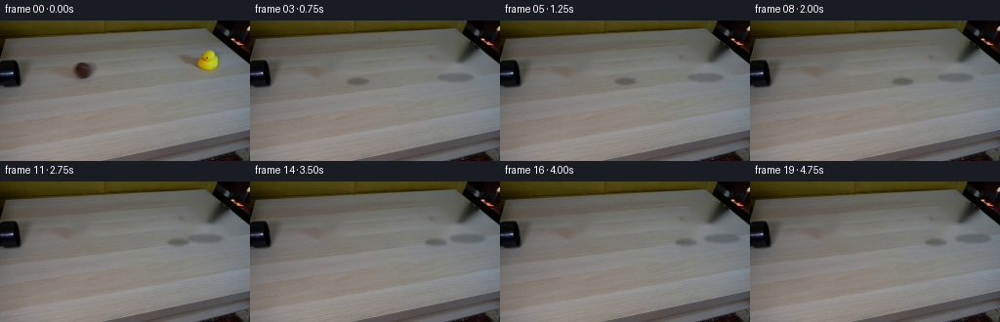
transition_check.png

代码变化
--- 上一保存版本
+++ 本次保存版本
@@ -139,7 +139,7 @@
def _ball_state(time_s):
- impact_time = 2.90
+ impact_time = 2.85
impact_x = 189.4
if time_s < impact_time:
return 85.0 + 36.0 * time_s, 0.0
@@ -155,7 +155,7 @@
def _duck_state(time_s):
- impact_time = 2.90
+ impact_time = 2.85
if time_s < impact_time:
return 212.0, 43.0, 0.0, (1.0, 1.0)
@@ -195,7 +195,7 @@
# A restrained in-plane rotation keeps the highlight stable while
# still giving the fuzzy tennis ball a visible rolling cue.
- if time_s < 2.90:
+ if time_s < 2.85:
roll_angle = -22.0 * (index - 1)
else:
roll_angle = -22.0 * 11.0
可观测工具行为
命令 1 · 2026-11-08T19:15:15.557485+00:00/bin/bash -c "pwd && rg --files -g '"'!*'"\\.git*' | sort"
exit 0 命令 2 · 2026-11-08T19:15:15.674540+00:00/bin/bash -c "sed -n '1,240p' prompt.txt"
exit 0 命令 3 · 2026-11-08T19:15:15.783454+00:00/bin/bash -c "sed -n '1,320p' GENERATION_RULES.md"
exit 0 命令 4 · 2026-11-08T19:15:16.129450+00:00/bin/bash -c 'file first_frame.png && identify first_frame.png 2>/dev/null || true && ls -lah'
exit 0 命令 5 · 2026-11-08T19:15:26.303974+00:00/bin/bash -c "sed -n '1,260p' artifact_io.py"
exit 0 命令 6 · 2026-11-08T19:15:26.562854+00:00/bin/bash -c "sed -n '1,280p' player_template.html"
exit 0 命令 7 · 2026-11-08T19:15:27.377518+00:00/bin/bash -c "python - <<'PY'
mods=['numpy','PIL','cv2','scipy','imageio','matplotlib']
for m in mods:
try:
x=__import__(m); print(m, getattr(x,'__version__','ok'))
except Exception as e: print(m, 'NO', repr(e))
PY"
exit 0 命令 8 · 2026-11-08T19:15:38.543154+00:00/bin/bash -c "python - <<'PY'
import cv2, numpy as np
im=cv2.imread('first_frame.png')[:,:,::-1]
# yellow duck mask
r,g,b=[im[:,:,i] for i in range(3)]
m=((r>150)&(g>120)&(b<110)&(r>g*0.9)).astype('uint8')
n,l,st,c=cv2.connectedComponentsWithStats(m,8)
for i in range(1,n):
x,y,w,h,a=st[i]
if a>10: print('yellow',i,x,y,w,h,a,c[i])
# dark ball/pipe
m=((r<120)&(g<90)&(b<85)).astype('uint8')
n,l,st,c=cv2.connectedComponentsWithStats(m,8)
for i in range(1,n):
x,y,w,h,a=st[i]
if a>10: print('dark',i,x,y,w,h,a,c[i])
PY"exit 0 命令 9 · 2026-11-08T19:15:42.753640+00:00/bin/bash -c "python - <<'PY'
from PIL import Image
im=Image.open('first_frame.png')
im.resize((1024,576),Image.Resampling.NEAREST).save('.tmp/first_x4.png')
PY"exit 0 命令 10 · 2026-11-08T19:16:06.464763+00:00/bin/bash -c "python - <<'PY'
from PIL import Image
im=Image.open('first_frame.png')
im.crop((62,28,110,72)).resize((480,440),Image.Resampling.NEAREST).save('.tmp/ball_x10.png')
im.crop((186,20,240,68)).resize((540,480),Image.Resampling.NEAREST).save('.tmp/duck_x10.png')
PY"exit 0 命令 11 · 2026-11-08T19:16:45.434343+00:00/bin/bash -c "python - <<'PY'
import numpy as np, cv2
from PIL import Image
img=np.array(Image.open('first_frame.png').convert('RGB'))
h,w=img.shape[:2]
base=img.astype(np.float32).copy()
# ball clean: shifted copy from right, feathered ellipse
for (cx,cy,rx,ry,dx) in [(85,52,14,12,40),(212,43,24,22,-50)]:
x0,x1=max(0,cx-rx-3),min(w,cx+rx+4); y0,y1=max(0,cy-ry-3),min(h,cy+ry+4)
yy,xx=np.mgrid[y0:y1,x0:x1]
a=np.clip(1.35-((xx-cx)/rx)**2-((yy-cy)/ry)**2,0,1)[...,None]
a=a*a*(3-2*a)
src=img[y0:y1, x0+dx:x1+dx].astype(np.float32)
base[y0:y1,x0:x1]=base[y0:y1,x0:x1]*(1-a)+src*a
# maybe inpaint core after copy to remove shadow fringe
m=np.zeros((h,w),np.uint8)
cv2.ellipse(m,(85,52),(13,11),0,0,360,255,-1)
cv2.ellipse(m,(212,43),(23,22),0,0,360,255,-1)
# use clone copy already, no inpaint
base=np.clip(base,0,255).astype(np.uint8)
Image.fromarray(base).save('.tmp/base.png')
Image.fromarray(base[20:75,160:245]).resize((680,440),Image.Resampling.NEAREST).save('.tmp/base_duck_zoom.png')
Image.fromarray(base[35:70,65:110]).resize((450,350),Image.Resampling.NEAREST).save('.tmp/base_ball_zoom.png')
PY"exit 0 命令 12 · 2026-11-08T19:17:01.144710+00:00/bin/bash -c "python - <<'PY'
import numpy as np, cv2
from PIL import Image
img=np.array(Image.open('first_frame.png').convert('RGB'))
for method in ['shift','inpaint']:
b=img.copy()
if method=='shift':
# full rectangular replacement from right, vertical feather edges
for y0,y1,x0,x1,dx in [(35,69,62,108,50),(21,68,180,245,-55)]:
src=img[y0:y1, x0+dx:x1+dx]
a=np.ones((y1-y0,x1-x0,1),np.float32)
fe=5
ramp=np.linspace(0,1,fe)[None,:,None]
a[:,:fe]*=ramp; a[:,-fe:]*=ramp[:,::-1]
b[y0:y1,x0:x1]=(b[y0:y1,x0:x1]*(1-a)+src*a).astype(np.uint8)
else:
m=np.zeros(img.shape[:2],np.uint8)
cv2.ellipse(m,(85,52),(15,14),0,0,360,255,-1)
cv2.ellipse(m,(212,43),(26,24),0,0,360,255,-1)
b=cv2.inpaint(img,m,5,cv2.INPAINT_TELEA)
Image.fromarray(b).save(f'.tmp/base_{method}.png')
PY"exit 0 命令 13 · 2026-11-08T19:17:49.277533+00:00/bin/bash -c "python - <<'PY'
from PIL import Image
import numpy as np, cv2
im=np.array(Image.open('first_frame.png').convert('RGB'))
hsv=cv2.cvtColor(im,cv2.COLOR_RGB2HSV)
for name,(x0,y0,x1,y1) in {'ball':(74,43,97,64),'duck':(197,25,231,60),'table':(130,35,180,65)}.items():
c=im[y0:y1,x0:x1]; h=hsv[y0:y1,x0:x1]
print(name,'rgb minmax',c.reshape(-1,3).min(0),c.reshape(-1,3).max(0),'H',np.percentile(h[:,:,0],[5,25,50,75,95]),'S',np.percentile(h[:,:,1],[5,25,50,75,95]),'V',np.percentile(h[:,:,2],[5,25,50,75,95]))
PY"exit 0 命令 14 · 2026-11-08T19:17:57.267977+00:00/bin/bash -c "python - <<'PY'
import numpy as np, cv2
from PIL import Image
im=np.array(Image.open('first_frame.png').convert('RGB')).astype(np.float32)
hsv=cv2.cvtColor(im.astype(np.uint8),cv2.COLOR_RGB2HSV)
# ball: brown low V and red-ish H
r,g,b=im[:,:,0],im[:,:,1],im[:,:,2]
bm=((r<135)&(g<100)&(b<90)&(r>g*0.85)&(g>b*0.9)).astype(np.uint8)
bm[:35]=0; bm[70:]=0; bm[:,:55]=0; bm[:,115:]=0
bm=cv2.morphologyEx(bm,cv2.MORPH_CLOSE,np.ones((3,3),np.uint8))
n,l,st,c=cv2.connectedComponentsWithStats(bm,8)
print('ball comps',[(tuple(st[i]),tuple(c[i])) for i in range(1,n) if st[i,4]>10])
# duck yellow
dm=((r>130)&(g>90)&(b<90)&(r>g*.95)&(g>b*1.15)).astype(np.uint8)
dm[:15]=0; dm[70:]=0; dm[:,:180]=0; dm[:,245:]=0
n,l,st,c=cv2.connectedComponentsWithStats(dm,8)
print('duck comps',[(tuple(st[i]),tuple(c[i])) for i in range(1,n) if st[i,4]>10])
# create mask ellipse from color + threshold
Y,X=np.mgrid[:144,:256]
# ball center 85,52; ellipse rx 11 ry 11; duck polygon mask from yellow plus body manually
ball_alpha=np.clip(1-((X-85)/11.5)**2-((Y-52)/10.5)**2,0,1)
duck_alpha=np.zeros_like(ball_alpha)
# use local color-based alpha around duck
for y in range(23,61):
for x in range(194,233):
rr,gg,bb=im[y,x]
if (rr>125 and gg>80 and bb<105 and rr>gg*.92 and gg>bb*1.05):
duck_alpha[y,x]=1
# fill interior gaps and edge smoothing via morphology
m=(duck_alpha*255).astype(np.uint8)
m=cv2.morphologyEx(m,cv2.MORPH_CLOSE,np.ones((5,5),np.uint8))
m=cv2.GaussianBlur(m,(3,3),.5)
# But full alpha within mask may include outlines etc okay
duck_alpha=m/255
# ball soft edge
ball_alpha=np.clip((ball_alpha-.06)/.70,0,1)
np.savez('.tmp/sprites.npz',ball_alpha=ball_alpha.astype(np.float32),duck_alpha=duck_alpha.astype(np.float32))
Image.fromarray((duck_alpha*255).astype(np.uint8)).crop((185,18,242,70)).resize((570,520),Image.Resampling.NEAREST).save('.tmp/duckmask.png')
Image.fromarray((ball_alpha*255).astype(np.uint8)).crop((68,35,103,70)).resize((350,350),Image.Resampling.NEAREST).save('.tmp/ballmask.png')
PY"exit 0 命令 15 · 2026-11-08T19:19:39.998508+00:00/bin/bash -c 'python generate.py'
exit 0 命令 16 · 2026-11-08T19:20:02.482640+00:00/bin/bash -c "python - <<'PY'
from PIL import Image,ImageDraw
ims=[Image.open(f'frames/{i:02d}.png') for i in range(20)]
sheet=Image.new('RGB',(256*4,(144+18)*5),(20,20,20)); d=ImageDraw.Draw(sheet)
for i,im in enumerate(ims):
x=(i%4)*256;y=(i//4)*162
d.text((x+4,y+3),f'{i:02d} {i/4:.2f}s',fill='white');sheet.paste(im,(x,y+18))
sheet.save('.tmp/all_frames.png')
# contact crop sheet at 4x nearest
coords=[(8,9,10,11,12,13,14,15)]
sheet2=Image.new('RGB',(256*4,144*2+20),(20,20,20));d=ImageDraw.Draw(sheet2)
for j,i in enumerate(range(8,16)):
x=(j%4)*256;y=(j//4)*(144+10)+10
d.text((x+3,y-9),f'{i:02d}',fill='white');sheet2.paste(ims[i],(x,y))
sheet2.save('.tmp/contact_frames.png')
PY"exit 0 命令 17 · 2026-11-08T19:20:27.956085+00:00/bin/bash -c 'python -m py_compile generate.py && ls -lh generate.py pixels.npz index.html inspection.png transition_check.png'
exit 0 命令 18 · 2026-11-08T19:20:28.170578+00:00/bin/bash -c "python - <<'PY'
from pathlib import Path
import numpy as np
from PIL import Image
frames=np.stack([np.asarray(Image.open(p).convert('RGB')) for p in sorted(Path('frames').glob('*.png'))])
first=np.asarray(Image.open('first_frame.png').convert('RGB'))
print('shape',frames.shape,'dtype',frames.dtype)
print('frame0_identical',np.array_equal(frames[0],first))
print('frame0_max_abs_error',int(np.abs(frames[0].astype(int)-first.astype(int)).max()))
print('unique_colors_first_last',len(np.unique(frames[0].reshape(-1,3),axis=0)),len(np.unique(frames[-1].reshape(-1,3),axis=0)))
print('changed_pixels_00_01',int(np.any(frames[0]"'!=frames[1],axis=2).sum()))
print('"'changed_pixels_11_12',int(np.any(frames[11]"'!=frames[12],axis=2).sum()))
print('"'artifact_bytes',Path('pixels.npz').stat().st_size)
PY"exit 0 命令 19 · 2026-11-08T19:20:28.278857+00:00/bin/bash -c 'git status --short 2>/dev/null || true'
exit 0 命令 20 · 2026-11-08T19:20:39.857770+00:00/bin/bash -c "python - <<'PY'
from PIL import Image
for i in [0,12,15,19]:
im=Image.open(f'frames/{i:02d}.png')
im.crop((185,18,256,72)).resize((568,432),Image.Resampling.NEAREST).save(f'.tmp/final_duck_{i}.png')
PY"exit 0 命令 21 · 2026-11-08T19:20:56.081061+00:00/bin/bash -c "python generate.py && python - <<'PY'
from pathlib import Path
import numpy as np
from PIL import Image
frames=np.stack([np.asarray(Image.open(p).convert('RGB')) for p in sorted(Path('frames').glob('*.png'))])
first=np.asarray(Image.open('first_frame.png').convert('RGB'))
assert frames.shape==(20,144,256,3) and frames.dtype==np.uint8
assert np.array_equal(frames[0],first)
print('validated',frames.shape,'frame0_exact',np.array_equal(frames[0],first))
PY"exit 0 视觉工具实际返回图片 1

视觉工具实际返回图片 2
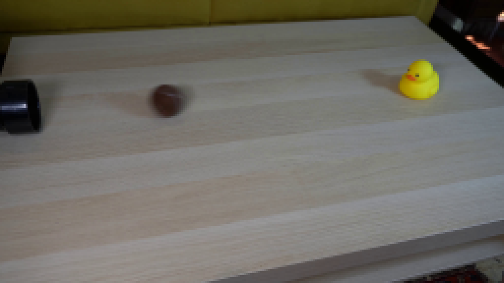
视觉工具实际返回图片 3
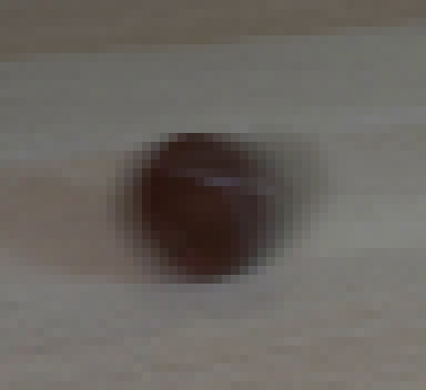
视觉工具实际返回图片 4
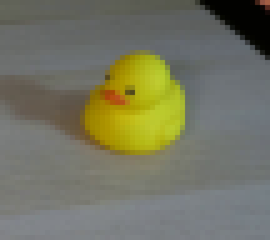
视觉工具实际返回图片 5
视觉工具实际返回图片 6
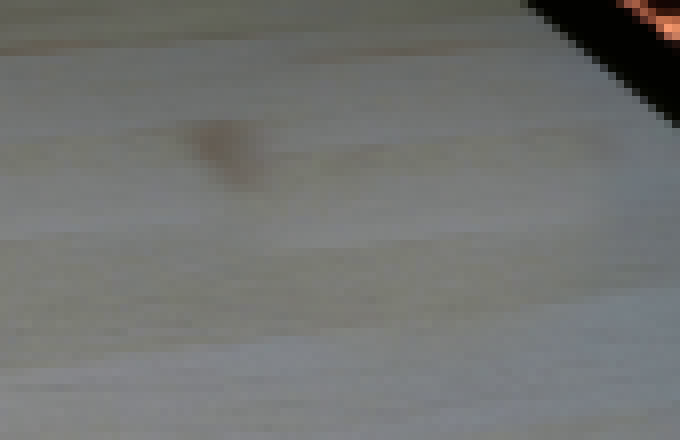
视觉工具实际返回图片 7
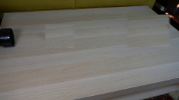
视觉工具实际返回图片 8
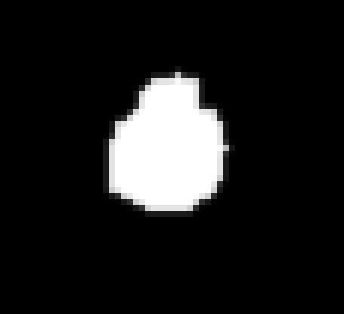
视觉工具实际返回图片 9
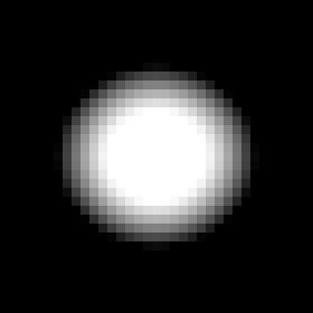
视觉工具实际返回图片 10

视觉工具实际返回图片 11
视觉工具实际返回图片 12

视觉工具实际返回图片 13
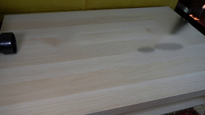
视觉工具实际返回图片 14
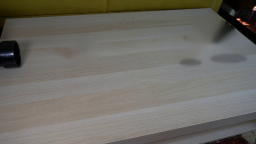
视觉工具实际返回图片 15
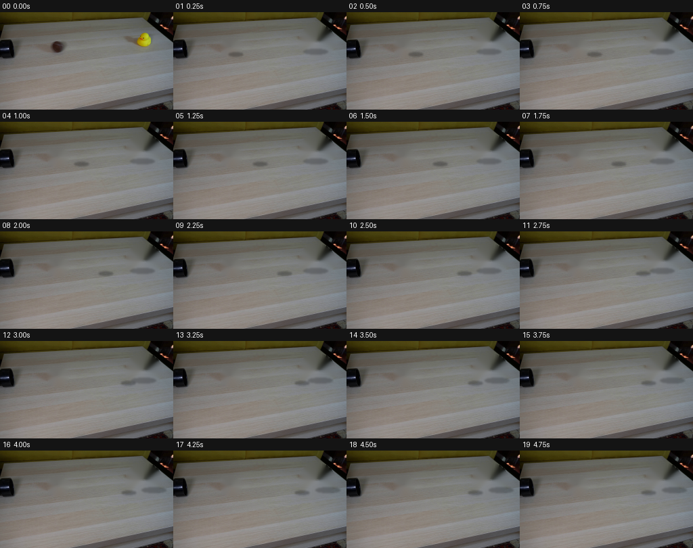
视觉工具实际返回图片 16
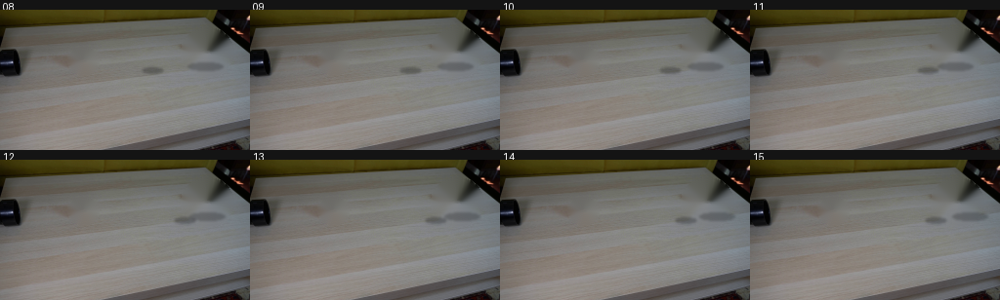
视觉工具实际返回图片 17
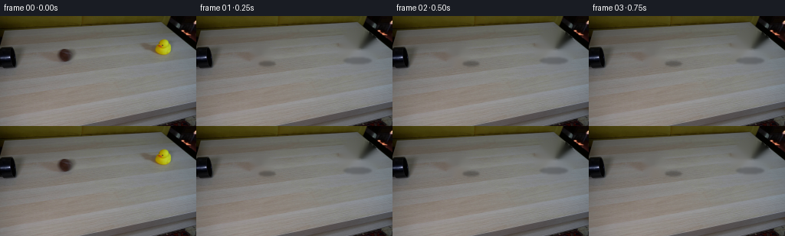
视觉工具实际返回图片 18
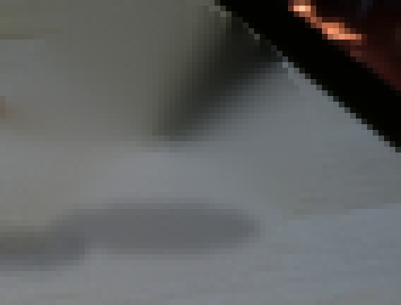
视觉工具实际返回图片 19
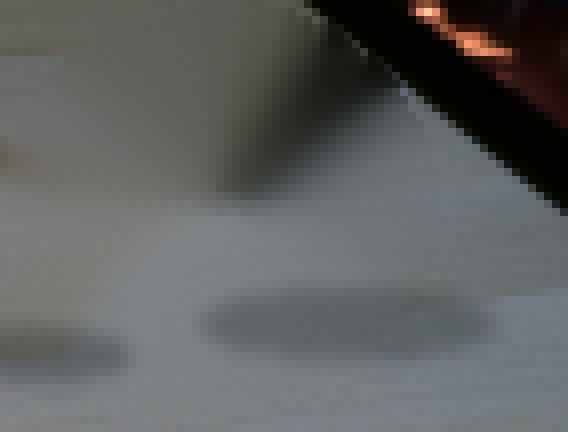
保存候选 2 份；完成命令 21 次；可验证图片返回 19 张。原始 API 响应与完整日志保留在本地。